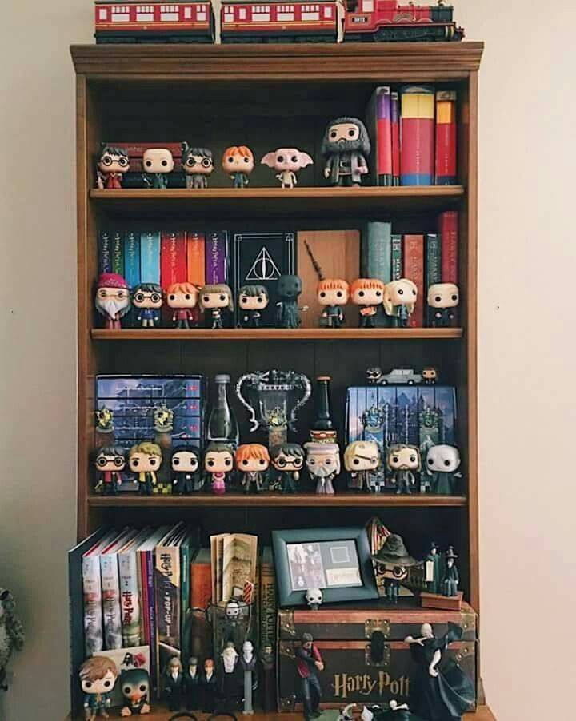
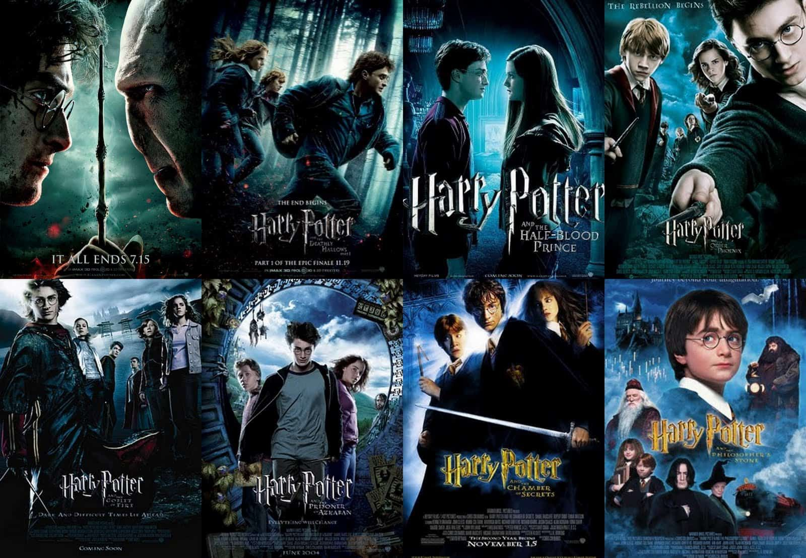
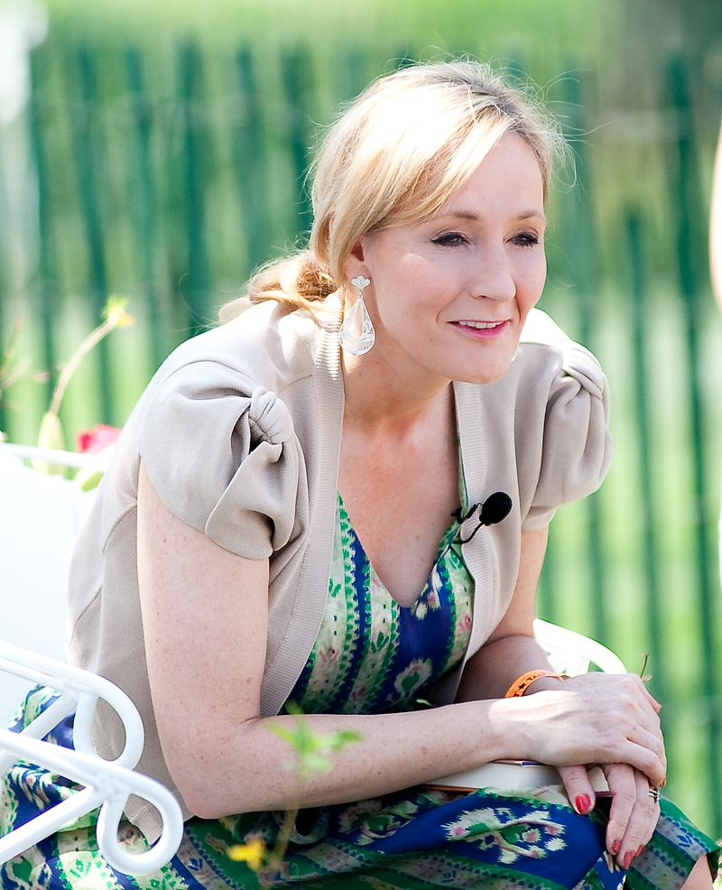
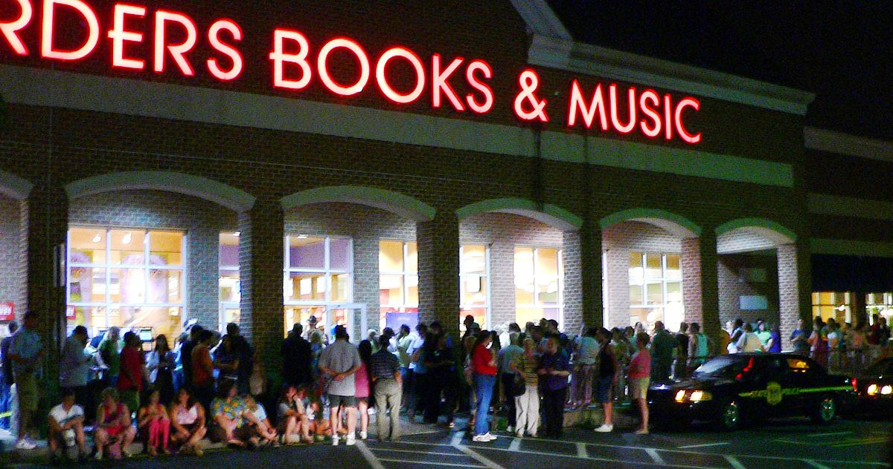
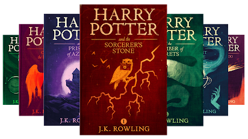

Harry Potter
Magia unei lumi fantastice

Harry Potter este o serie de șapte romane fantastice scrise de autoarea britanică, J. K. Rowling. Romanele relatează viața unui tânăr vrăjitor, Harry Potter, și a prietenilor săi Hermione Granger și Ron Weasley, toți elevi la "Școala de magie, farmece și vrăjitorii Hogwarts".
De la lansarea primului volum, "Harry Potter și piatra filozofală", în 1997, cărțile au câștigat o imensă popularitate și un succes comercial în întreaga lume. Toate cele opt volume s-au vândut în peste 450 milioane de exemplare, fiind traduse în peste 63 de limbi. A șaptea carte din seria Harry Potter, "Harry Potter și Talismanele Morții", a fost lansată pe data de 21 iulie 2007. Editorii au anunțat un record de 12 milioane de exemplare vândute în Statele Unite ale Americii, pentru prima ediție.
Succesul romanelor sale a făcut-o pe J. K. Rowling cea mai bogată scriitoare din istorie. Versiunile în limba engleză ale cărților au fost publicate de către Bloomsbury în Regatul Unit, Scholastic Press în Statele Unite, Allen & Unwin în Australia și Raincoast Books în Canada. Toate cele șapte volume principale ale seriei au fost ecranizate de către Warner Bros.

În 1990, Rowling se afla într-un tren aglomerat de la Manchester la Londra când ideea pentru Harry „a căzut brusc în capul ei”. Rowling prezintă experiența pe site-ul ei spunând:
"Scrisesem aproape continuu de la vârsta de șase ani, dar nu fusesem niciodată atât de încântat de o idee până acum. Pur și simplu am stat și m-am gândit, timp de patru ore (trenul a întârziat), și toate detaliile mi-au bubuit în creier, iar acest lucru, băiatul acela, cu părul negru, cu ochelari, care nu știa că este un vrăjitor, a devenit din ce în ce mai real pentru mine. "
Rowling a finalizat cartea "Harry Potter și Piatra Filosofală" în 1995, iar manuscrisul a fost trimis mai multor agenți. Al doilea agent pe care l-a încercat, Christopher Little, s-a oferit să o reprezinte în fața editurii Bloomsbury.

După ce alți opt editori au respins "Piatra Filozofală", Bloomsbury i-a oferit lui Rowling un avans de 2.500 de lire sterline pentru publicarea sa. În ciuda declarației lui Rowling că nu avea în vedere nicio grupă de vârstă anume atunci când a început să scrie cărțile Harry Potter, editorii au vizat inițial copii cu vârste cuprinse între nouă și unsprezece ani. În ajunul publicării, Rowling a fost solicitată de editorii săi să adopte un nume de stil mai neutru din punct de vedere al genului pentru a face cartea mai atrăgătoare pentru membrii de sex masculin din această grupă de vârstă, temându-se că nu ar fi interesați să citească un roman pe care știau să-l scrie de o femeie. Ea a ales să folosească numele J. K. Rowling (Joanne Kathleen Rowling), folosind numele bunicii sale ca al doilea nume, deoarece nu are un prenume.
Seria a fost tradusă în 80 de limbi, consacrând-o pe Rowling drept unul dintre cei mai traduși autori din istorie. Cărțile au fost traduse în limbi diversificate, cum ar fi coreeană, armeană, ucraineană, arabă, urdu, hindi, bengali, bulgară, galeză, afrikaans, albaneză, letonă , vietnameză și hawaiană. Primul volum a fost tradus în latină și chiar în greaca veche, devenind cea mai lungă lucrare publicată în greaca veche de după romanele lui Heliodor din Emesa în secolul al III-lea d.Hr. Al doilea volum a fost tradus și în latină.
Primele volume au avut un impact atât de mare asupra fanilor, încât librăriile din întreaga lume au început să organizeze evenimente care să coincidă cu lansarea cărților la miezul nopții, începând cu publicarea în 2000 a "Harry Potter și Pocalul de foc". Evenimentele, prezentând jocuri, pictură pe față și alte activități live, au atins popularitate în rândul fanilor Potter și au avut un mare succes în atragerea de fani și vânzarea de cărți, aproape nouă milioane din cele 10,8 milioane de exemplare inițiale ale "Harry Potter și Prințil semi-pur" fiind vândute în primele 24 de ore.
Cartea finală a seriei, "Harry Potter și Talismanele Morții", a devenit cartea cea mai rapid vândută din istorie, cu 11 milioane de unități vândute în primele 24 de ore de la lansare. În fața librăriilor s-au format cozi uriașe în anticiparea lansării ultimei cărți.

Seria Harry Potter a fost recunoscută și premiată de o multitudine de organizații de la publicarea inițială a Piatrei filosofale, precum:
J. K. Rowling mărturisește că principala temă abordată de cărțile ei este cea a morții:
"Cărțile mele sunt în mare parte despre moarte. Se deschid odată cu moartea părinților lui Harry. Se face simțită și obsesia lui Voldemort pentru cucerirea morții și căutarea sa cu orice preț a nemuririi, scopul oricui are magie. Înțeleg așadar de ce Voldemort vrea să cucerească moartea. Cu toții suntem terifiați de ea."
Rowling afirmă că "volumele Harry Potter s-au ocupat întotdeauna în mod explicit cu temele religioase” și că ea nu și-a dezvăluit paralelele creștine la început, deoarece acest lucru ar fi "dat prea mult fanilor care ar putea apoi să vadă paralelele ". În ultimul volum al seriei, "Harry Potter and the Deathly Hallows", Rowling face imaginile creștine ale cărții mai explicite, citând atât Matei 6:21, cât și 1 Corinteni 15:26, când Harry vizitează mormintele părinților săi.
Academicienii și jurnaliștii au dezvoltat multe alte interpretări ale temelor din cărți, unele mai complexe decât altele, iar altele incluzând subtexte politice. Teme precum normalitatea, opresiunea, supraviețuirea și depășirea cotelor impunătoare au fost considerate prevalente pe tot parcursul seriei. În mod similar, a fost luată în considerare și tema de croire a drumului prin adolescență și de a „trece peste cele mai îngrozitoare încercări - și astfel să ne împăcăm cu ele". Rowling a afirmat că volumele cuprind "un argument prelungit pentru toleranță, o pledoarie prelungită pentru încetarea fanatismului” și că transmit și un mesaj pentru "a pune la îndoială autoritatea".
